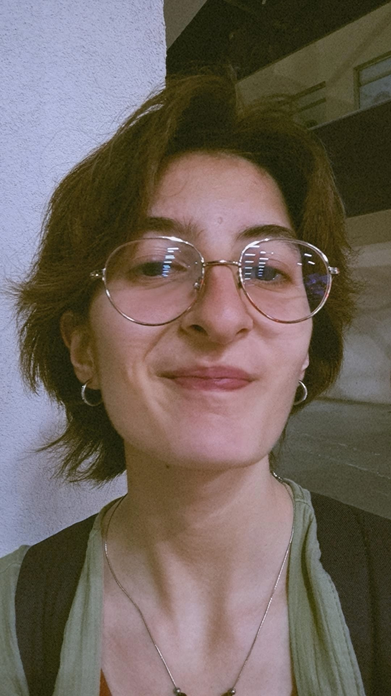

welcome
I am Zeynep Kalaça, this is my website.
Student, Middle East Technical University (2023-2028)
Research Assistant, Koç University (2026)
I am Zeynep Kalaça, this is my website.
Student, Middle East Technical University (2023-2028)
Research Assistant, Koç University (2026)
